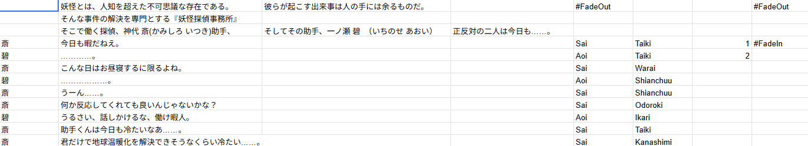
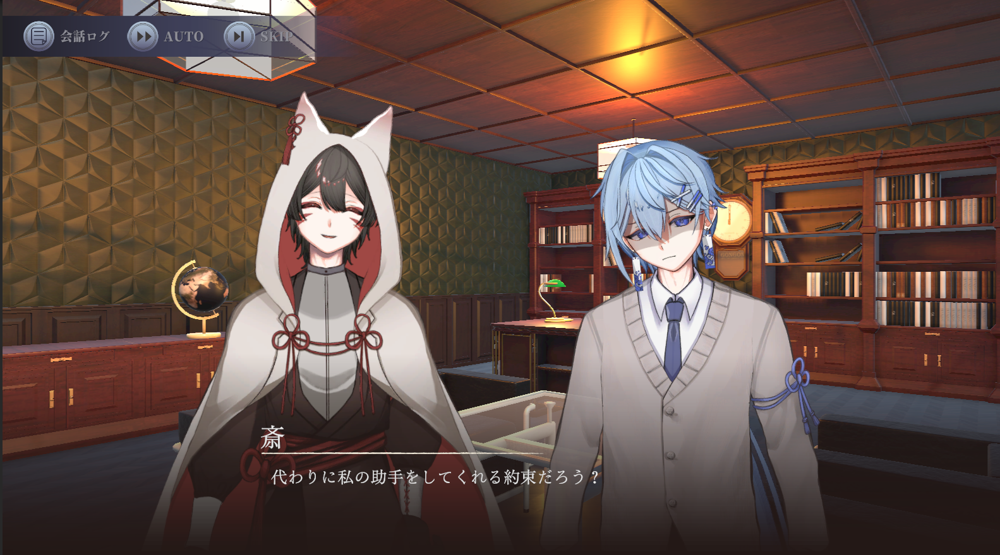
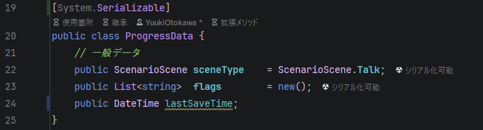

概要
「妖怪探偵」は、専門学校3年の夏休みからチームで制作している、和風ノベルアドベンチャーゲームです。
プレイヤーは探偵となり、人間と妖怪が共存する不思議な街で巻き起こる奇妙な事件の謎を解き明かしていきます。
私はプログラム全般をはじめ、Unity Version Controlを使用したプロジェクト全体のリポジトリ管理およびブランチ戦略の構築を担当しました。
Unity上で動作する独自のテキストアドベンチャーエンジンを構築し、ストーリーの分岐や演出を柔軟にコントロールできるシステムを実現しています。
製作期間
2025年8月 〜 現在進行中 (3年生の夏休みから開始)
使用技術
ゲームエンジン: Unity 2022.3 LTS
使用言語: C#
データ設計: ScriptableObject / JSON
バージョン管理: Unity Version Control
特徴
Live2Dによるキャラクターアニメーション
Cubism Unity SDKの導入により、Live2Dアニメーションを表示するシステムを構築。
2Dで描かれたキャラクターをデザイナーの思い通りに動かすことができるようになりました。

CSVファイルを用いて、キャラクターのアニメーション情報やテキストデsータを管理するシステムを構築しました。
テキストデータを編集するだけで自動的にゲーム内へ反映されるため、プログラマー以外のメンバーでもシナリオの追加や変更が容易に行える開発環境を実現しました。

会話テキストを表示する際、1文字ずつ流れるように表示することで、ノベルゲーム特有の臨場感ある演出を実現しました。
また、表示中にマウスをクリックすると即座に全文を表示する機能や、プレイヤーの利便性を高めるオートプレイ（自動送り）機能、バックログ表示機能も実装しています。

プレイヤーの行動（アイテムの発見や会話）に伴うイベント進行を制御するため、固有のイベントフラグシステムを構築しました。これらを一元管理することで、イベントの進行状況や回収済みの要素を正確に判別できるよう設計しました。

本作では会話パートと探索パートが交互に進行し、プレイヤーは探索パートにおいて周囲を調査し証拠品を入手します。
証拠となるゲームオブジェクトに専用のコンポーネントをアタッチし、フラグ等のパラメータを設定するだけで、簡単に捜査対象（インタラクティブオブジェクト）にできる仕組みを構築しました。これにより、プランナーやデザイナーによるマップデザインやイベント配置作業の効率化を図りました。